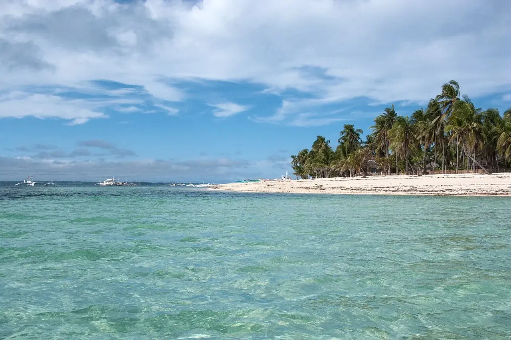

Malapascua
Cebu, Philippines · plongée

Une île au nord de Cebu, point de départ de sorties de plongée. Le site précis se choisit avec le centre local.
- Lieu
- Cebu, Philippines
- Niveau
- Variable selon les conditions
- Activités
- plongée
- Type d'eau
- Mer / océan
- Coordonnées
- 11.33, 124.12 (position approximative du secteur)
Ouvrir dans Ocean Buddy Télécharger sur l'App Store
Source : Office du tourisme des Philippines.